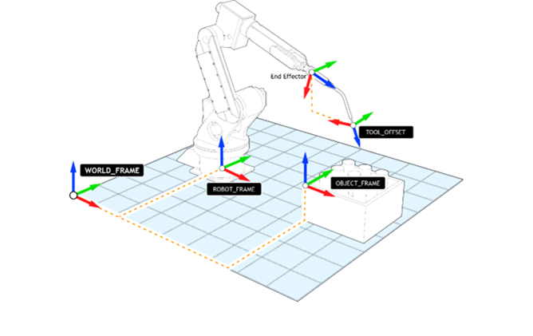

Frames are 4x4 orthogonal matrices that define a position and orientation in XYZ space. They are defined for a 3-axis translation and rotation. The rotations are applied using the Euler ZYX convention. This means that the Z rotation is applied first, then the Y is applied on the new coordinate system and finally the X is applied. The coordinate system is defined using the ‘right hand rule’ and the rotation of the origin is defined using the ‘right hand turn’.
Frames are applied on the axis KINEMATIC_GROUP. If no KINEMATIC_GROUP is defined, then a runtime error will be generated.
Movements are loaded with the selected frame and tool. This means that you can buffer a sequence of moves on different frames and tools. The active frame and tool are the one associated with the move in the MTYPE. If the KINEMATIC_GROUP is IDLE, then the active frame and tool is the selected frame and tool.
This is an implicit frame within which the robot resides. It represents the world coordinate that uniquely fix the system (0, 0, 0 position and identity matrix for orientation). It specifies the relationship between a moving observer and the object under observation. It cannot be overwritten but the coordinate system of RPS can be modified by using an OBJECT_FRAME.
This is an explicit frame defined with the OBJECT_FRAME keyword. It is located on an object. Its position and orientation are relative to the World Frame. It can change the coordinate system to program from. Once an OBJECT_FRAME is applied, the robot and all the points will be related to it.
This is an explicit frame defined with the ROBOT_FRAME keyword. It is located on the robot base. Its position and orientation are relative to World Frame. It can change the position and orientation of the robot relative to the active coordinate system (either the World Frame as default or OBJECT_FRAME). Setting this frame the TCP (Tool Centre Point) is always related to the World Frame or OBJECT_FRAME, no matter what position the robot is in.
This is an explicit frame defined with the TOOL_OFFSET keyword. It is the offset between the centre of the robot flange and the TCP of the mounted end-effector. It sets a distance and orientation of the mounted tool. If no TOOL_OFFSET is applied, the TCP is at the centre of the robot flange.
This is an explicit frame defined with the TOOL_COLLISION keyword. It consists of data for building a bound box around the tool. For more information, please refer to the Tool Collision and Collision Detection sections.
The following picture shows the relationship between frames.
